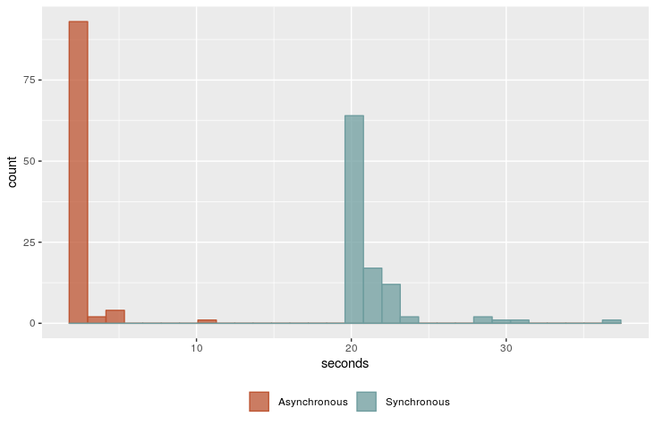

Async Web Scraping
An Introduction for DATA 607
By: Mike Silva
What Do You Mean by Async?
How About a Nice Game of Chess?

How Long Did That Take?
- 48 Chess Boards
- Average Game = 40 Moves
- Suppose 1 Minute per Move
- Synchronously = 40 Moves x 1 Minute x 48 Games = 1,920 Minutes = 32 Hours
How Long Did That Take?
- 48 Chess Boards
- Average Game = 40 Moves
- Suppose 5 Minutes to Walk Through the Room
- Asynchronously = 40 Moves x 5 Minutes = 200 Minutes = 3 ½ Hours
Case Study 1: BLS API
- U.S. Bureau of Labor Statistics
- Details at: https://www.bls.gov/developers/
Test Case
- Local Area Unemployment Statistics (LAUS)
- Labor Force
- Number Unemployed
- Unemployment Rate
- All 50 States and D.C.
Approach
- Python 3
- Asyncio
- Requests
- Request Data Synchronously & Asynchronously
- Repeated 100 Times
- Execution Times Saved to Spreadsheet
- Source Code Available at: https://mikeasilva.github.io/presentations/data-607/test.py
In Chess Terms
- 51 Chess Boards
- 3 Moves per Game
- Question: How Long Did That Take?
- Synchronously
- Asynchronously
Execution
- Monday Sept 24th 2018
- 4:00 to 4:45 PM (apx)
- Anaconda Python
- Windows 7 System
- X GB RAM
- 10x100 Tunnel
Results
Results
| Synchronous | Asynchronous | |
|---|---|---|
| Min | 20.18 | 2.130 |
| Median | 20.61 | 2.320 |
| Mean | 21.43 | 2.556 |
| Max | 36.75 | 10.476 |
Case Study 2: Property Tax Portal
- Monroe County Property Tax Portal
Actual Case
- Extract Residential Property Records HTML
- Store in SQLite database
- Allow Further Extraction Work
Similar Approach
- Python 3
- Asyncio
- Requests
- Request Data Asynchronously
How Long Did That Take?
- Number of Webpages: 227,062
- Total Time: 49 minutes
- SQLite Database Size: X GB